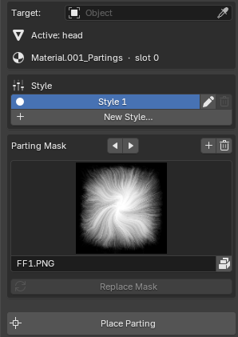

Target And Styles¶
Applies to: Parting Placer V2.0.0 · Blender 4.4 · 5.2
This page covers the top of the panel. Target picks the head you are working on. Under it, the Style box holds that head's styles, and the Parting Mask box sets the image new partings use.
The large Place Parting button sits below them. See Place Parting.

Target¶
Pick your head mesh here. Only mesh objects can be picked.
Its tooltip reads: Mesh to stamp partings onto. Leave empty to use the active object.
You can leave it empty. The panel then works on the mesh you have selected and shows Active: followed by its name.
With Target empty and no mesh selected, the panel shows "Pick a mesh, or select one". Everything below it is hidden, including Place Parting.
Material And Slot Line¶
Once the head has a parting, a line appears under Target. It names the partings material and the material slot it sits in. For example: Material.001_Partings · slot 0.
It is information only.
Style¶
The styles sit in their own Style box under Target, once the head has a style.
A style is a complete set of partings on one head. Each style gets its own row, listed in alphabetical order. The style showing on the head has a filled dot and a highlighted row.
The first style on a head is called Style 1.
Select another style's row to load it. The style that was showing is parked: its partings come off the head and their Empties are hidden. A parked style stays in your file, ready to load again.
When a style loads, the status bar says how many of its partings are showing. For example: Loaded 'Style 1' — 1 parting(s) shown.
Turn Preview Off First
Select Disable Preview before you load another style or use New Style…. With Preview on, the style you load can come back with its partings' Empties hidden.
A parting you hid stays hidden when its style loads again.
Pencil (Rename Style)¶
The pencil at the right of a style's row renames that style. Type the new name in the Name field and confirm.
Each style on a head needs its own name, and capitals don't count. With Style 1 on the head, the name "style 1" is refused.
Renaming a style also renames its collection in the Outliner.
Trash (Delete Style)¶
The trash can at the right of a style's row deletes that style, along with its partings and their Empties.
The trash can is greyed out while the head has only one style. To clear the last style, use Reset Partings.
Blender asks you to confirm first.
Pressed it by mistake? Ctrl+Z straight after brings the style back, partings included.
New Style…¶
Parks the style you have now and gives you an empty one to place into. It stays greyed out until the current style has at least one parting.
A dialog called New Parting Style opens with two names filled in:
| Field | What it names |
|---|---|
| Name Current | The style being parked, for example Style 1 |
| New Style | The empty style you are about to place into, for example Style 2 |
Select Continue. The two names must differ, and neither can match another style on the head.
The status bar confirms it, for example Parked 'Style 1' (2 Empty(s) hidden). Now stamping into 'Style 2'. Place partings into the new style as usual. See Place Parting And Placement Keys.
Parting Mask¶
The Parting Mask box sits under the styles. It sets the image each new parting is stamped with.
The thumbnail shows the mask new partings will use. Select it to pick from your masks. The list holds only masks: images added with +, and images your partings already use.
With no mask picked, a line under the thumbnail says which image will be used. Using: bundled default means the mask that ships with the add-on.
Its tooltip starts: Displacement map used for new stamps.
Picking a mask only affects partings you place afterwards. To change partings already on the head, use Replace.
To make your own mask, match the one that ships with the add-on:
- A square greyscale PNG, 1024 × 1024 pixels.
- White where the parting shows. Brighter areas show more strongly.
- Black around the edges. Anything past the edge of the image is cut off.
Arrows¶
The two arrows beside the label step back and forward through your masks. They wrap round at the ends.
Their tooltip reads: Step to the previous or next parting mask.
Plus (Add Parting Mask)¶
The + loads a mask from an image file. The image is packed into the .blend, so the file keeps working if the image moves.
It stays in the file even when no parting uses it.
Its tooltip reads: Load an image as a parting mask for new partings. It is packed into the .blend and set to sRGB.
Trash (Remove From Masks)¶
The trash can takes the shown mask out of your list. Partings already using it keep it, and it stays listed until they are replaced.
A mask nothing uses is dropped from the file the next time you save.
Its tooltip reads: Take the current Parting Mask out of the mask list. Partings already using it keep it.
Replace¶
Shown at the bottom of the box once the head has partings. It puts the shown mask on the ticked partings, or on the highlighted one when nothing is ticked.
Position, shape, warp and settings stay as they were. Linked mirrors follow.
The button names what it will change, for example Replace on Parting 002 or Replace on 3 Ticked. With nothing to change it reads Replace Mask and is greyed out.
If Preview Mode is on, Replace turns it off so the new mask shows.
It is greyed out while you are placing partings or editing a warp. Its tooltip then says Finish placing or warp editing first.
Its tooltip reads: Put the current Parting Mask on the ticked partings (or the active one when none are ticked). Position, shape, warp and settings are kept.
If You're Stuck
- Partings gone after you loaded a style? See I Cannot See Any Partings.
- Nothing appears when you place? See Place Parting Does Nothing.
- Anything else: Still Stuck.
Recommended next: Place Parting And Placement Keys